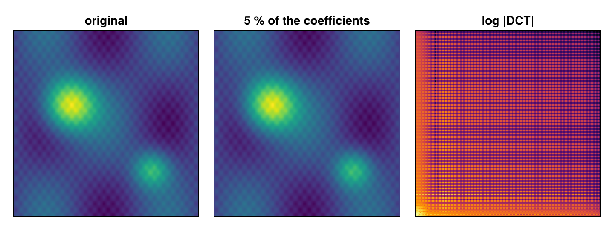

Compressing an image with the DCT
The JPEG idea in a few lines. A smooth image has most of its energy in few low-frequency cosine coefficients. The two-dimensional DCT-II moves the image into that basis; keeping only the largest coefficients and transforming back gives a compressed image.
The image is generated here, so the example needs no files.
using FFTL, CairoMakie, LinearAlgebra
n = 256
u = range(0, 1; length = n)
img = [exp(-((x - 0.3)^2 + (y - 0.6)^2) / 0.02) + 0.6 * exp(-((x - 0.75)^2 + (y - 0.25)^2) / 0.01) +
0.2 * sin(3π * x) * cos(2π * y) + 0.05 * sin(40π * x) * cos(30π * y) for x in u, y in u];
size(img)(256, 256)The transform
dct transforms both dimensions. It is orthonormal, so the energy is the same in both domains (Parseval):
C = dct(img)
norm(C) ≈ norm(img)trueKeep the largest coefficients
Sort the coefficients by magnitude, keep the top keep fraction and set the rest to zero:
function compress(C, keep)
m = round(Int, keep * length(C))
thresh = partialsort(vec(abs.(C)), m; rev = true)
Ck = map(c -> abs(c) >= thresh ? c : zero(c), C)
Ck, count(!iszero, Ck) / length(C)
end
for keep in (0.2, 0.05, 0.01)
Ck, frac = compress(C, keep)
R = idct(Ck)
println("kept ", round(100 * frac; digits = 1), " % of the coefficients, relative error ",
round(norm(R - img) / norm(img); sigdigits = 2))
endkept 20.0 % of the coefficients, relative error 3.2e-6
kept 5.0 % of the coefficients, relative error 0.00014
kept 1.0 % of the coefficients, relative error 0.0017The error grows as fewer coefficients are kept.
The reconstruction from 5 % of the coefficients next to the original, and the coefficient magnitudes on a log scale, which show where the energy sits:
Ck, frac = compress(C, 0.05)
fig = Figure(size = (720, 270))
panels = [(img, "original"), (idct(Ck), "5 % of the coefficients"),
(log10.(abs.(C) .+ 1e-16), "log |DCT|")]
for (i, (d, t)) in enumerate(panels)
ax = Axis(fig[1, i]; title = t)
hidedecorations!(ax)
heatmap!(ax, d; colormap = i <= 2 ? :viridis : :inferno)
end
fig
Inverse
idct inverts dct exactly, up to rounding:
norm(idct(C) - img) / norm(img) < 1e-12trueThis page was generated using Literate.jl.